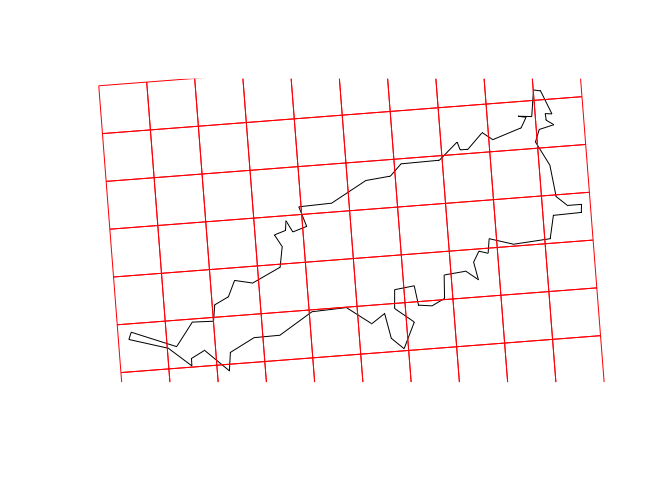
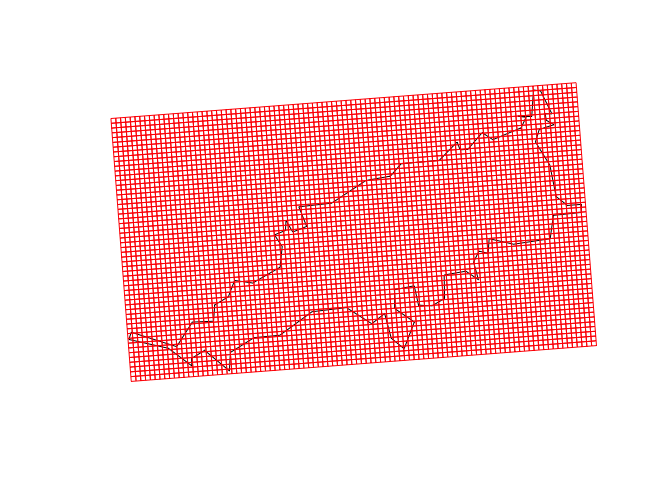

The goal of ‘gridbr’ is to provide easy access to the Brazilian Statistical Grid, published by the Brazilian Institute of Geography and Statistics (IBGE). It builds upon the development made in the project IBGE Statistical Grid in Compact Representation.
Installation
You can install the development version of gridbr from this GitHub repository with devtools:
devtools::install_github("luisfelipebr/gridbr")Usage
Setup
In the following examples, the Brazilian archipelago Fernando de Noronha is used as aoi. It can be download with the package geobr by using its municipality code.
aoi <- read_municipality(2605459, showProgress = FALSE)
plot(st_geometry(aoi))
gridbr_download(input, cellsize)
gridbr_download() is the main function available in the package. It builds the original statistical grid published by IBGE and merge it with downloaded 2010 population census data. The user must provide the area of interest (aoi) as a geospatial sf object.
Two arguments are mandatory: input and cellsize.
aoi_grid <- gridbr_download(input = aoi,
cellsize = "1KM")
head(aoi_grid)
#> Simple feature collection with 6 features and 5 fields
#> Geometry type: POLYGON
#> Dimension: XY
#> Bounding box: xmin: -32.48123 ymin: -3.890802 xmax: -32.46804 ymax: -3.836282
#> Geodetic CRS: SIRGAS 2000
#> id MASC FEM POP DOM_OCU geometry
#> 1 1KME7376N10816 0 0 0 0 POLYGON ((-32.47706 -3.8908...
#> 2 1KME7376N10817 0 0 0 0 POLYGON ((-32.47775 -3.8818...
#> 3 1KME7376N10818 0 0 0 0 POLYGON ((-32.47845 -3.8728...
#> 4 1KME7376N10819 0 0 0 0 POLYGON ((-32.47914 -3.8638...
#> 5 1KME7376N10820 0 0 0 0 POLYGON ((-32.47984 -3.8549...
#> 6 1KME7376N10821 0 0 0 0 POLYGON ((-32.48054 -3.8459...
plot(st_geometry(aoi))
plot(st_geometry(aoi_grid), add = TRUE, border = "red")
The original Brazilian statistical grid was made available at the following cell sizes: ‘500KM’, ‘100KM’, ‘50KM’, ‘10KM’, ‘5KM’, ‘1KM’ and ‘200M’. Using a different cell size value will result in an error. The ‘200M’ cell size grid covers only urban areas and is complemented by cells with ‘1KM’ cell size. If you want to build a grid with ‘200M’ cell size covering the entire area of interest (and without population census data), you can use the function gridbr_make().
Retrieving population census data requires either an internet connection or the support package gridbr.data. If the user does not meet these requirements, the output will include only the cell’s id and geometry, but not population census data.
If the user meet the requirements to retrieve population census data but don’t want to include it, they can specify it by setting the optional census_data parameter to FALSE.
aoi_grid <- gridbr_download(input = aoi,
cellsize = "1KM",
census_data = FALSE)
head(aoi_grid)
#> Simple feature collection with 6 features and 1 field
#> Geometry type: POLYGON
#> Dimension: XY
#> Bounding box: xmin: -32.47775 ymin: -3.890802 xmax: -32.42292 ymax: -3.877677
#> Geodetic CRS: SIRGAS 2000
#> id geom
#> 1 1KME7376N10816 POLYGON ((-32.47706 -3.8908...
#> 2 1KME7377N10816 POLYGON ((-32.46804 -3.8901...
#> 3 1KME7378N10816 POLYGON ((-32.45901 -3.8894...
#> 4 1KME7379N10816 POLYGON ((-32.44999 -3.8887...
#> 5 1KME7380N10816 POLYGON ((-32.44097 -3.8880...
#> 6 1KME7381N10816 POLYGON ((-32.43194 -3.8873...There is another optional parameter related to the projection: by default, the output will use the same CRS as the input. If you want to keep the original grid CRS, with an equal area projection, you must set the equal_area parameter to TRUE.
aoi_grid <- gridbr_download(input = aoi,
cellsize = "1KM",
equal_area = TRUE)
head(aoi_grid)
#> Simple feature collection with 6 features and 5 fields
#> Geometry type: POLYGON
#> Dimension: XY
#> Bounding box: xmin: 7376000 ymin: 10816000 xmax: 7377000 ymax: 10822000
#> CRS: +proj=aea +lat_0=-12 +lon_0=-54 +lat_1=-2 +lat_2=-22 +x_0=5000000 +y_0=10000000 +ellps=GRS80 +units=m +no_defs
#> id MASC FEM POP DOM_OCU geometry
#> 1 1KME7376N10816 0 0 0 0 POLYGON ((7376000 10816000,...
#> 2 1KME7376N10817 0 0 0 0 POLYGON ((7376000 10817000,...
#> 3 1KME7376N10818 0 0 0 0 POLYGON ((7376000 10818000,...
#> 4 1KME7376N10819 0 0 0 0 POLYGON ((7376000 10819000,...
#> 5 1KME7376N10820 0 0 0 0 POLYGON ((7376000 10820000,...
#> 6 1KME7376N10821 0 0 0 0 POLYGON ((7376000 10821000,...gridbr_make(input, cellsize)
gridbr_make() allows the user to make a standardized statistical grid using any cell size (without population census data). An input geospatial sf object and the cell size (in meters) must be specified.
aoi_grid <- gridbr_make(input = aoi,
cellsize = 100)
head(aoi_grid)
#> Simple feature collection with 6 features and 1 field
#> Geometry type: POLYGON
#> Dimension: XY
#> Bounding box: xmin: -32.47588 ymin: -3.883487 xmax: -32.4704 ymax: -3.882175
#> Geodetic CRS: SIRGAS 2000
#> gid geom
#> 1 100ME7376250N10816850 POLYGON ((-32.47581 -3.8834...
#> 2 100ME7376350N10816850 POLYGON ((-32.47491 -3.8834...
#> 3 100ME7376450N10816850 POLYGON ((-32.47401 -3.8833...
#> 4 100ME7376550N10816850 POLYGON ((-32.4731 -3.88328...
#> 5 100ME7376650N10816850 POLYGON ((-32.4722 -3.88321...
#> 6 100ME7376750N10816850 POLYGON ((-32.4713 -3.88314...
plot(st_geometry(aoi))
plot(st_geometry(aoi_grid), add = TRUE, border = "red")
An alternative unique identifier gid and the cell’s geometry are included in the output. If the cell size is contained in the original statistical grid pool (500000, 100000, 50000, 10000, 5000, 1000, 200), the original id is also included in the output.
There is an optional parameter related to the projection: by default, the output will use the same CRS as the input. If you want to keep the original grid CRS, with an equal area projection, you must set the equal_area parameter to TRUE.
aoi_grid <- gridbr_make(input = aoi,
cellsize = 100,
equal_area = TRUE)
head(aoi_grid)
#> Simple feature collection with 6 features and 1 field
#> Geometry type: POLYGON
#> Dimension: XY
#> Bounding box: xmin: 7376200 ymin: 10816800 xmax: 7376800 ymax: 10816900
#> CRS: +proj=aea +lat_0=-12 +lon_0=-54 +lat_1=-2 +lat_2=-22 +x_0=5000000 +y_0=10000000 +ellps=GRS80 +units=m +no_defs
#> gid geom
#> 1 100ME7376250N10816850 POLYGON ((7376200 10816800,...
#> 2 100ME7376350N10816850 POLYGON ((7376300 10816800,...
#> 3 100ME7376450N10816850 POLYGON ((7376400 10816800,...
#> 4 100ME7376550N10816850 POLYGON ((7376500 10816800,...
#> 5 100ME7376650N10816850 POLYGON ((7376600 10816800,...
#> 6 100ME7376750N10816850 POLYGON ((7376700 10816800,...